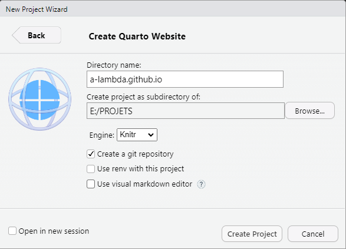
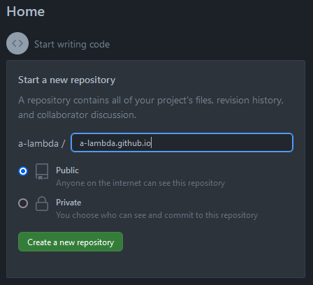
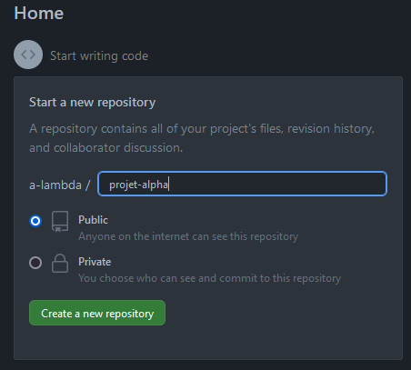
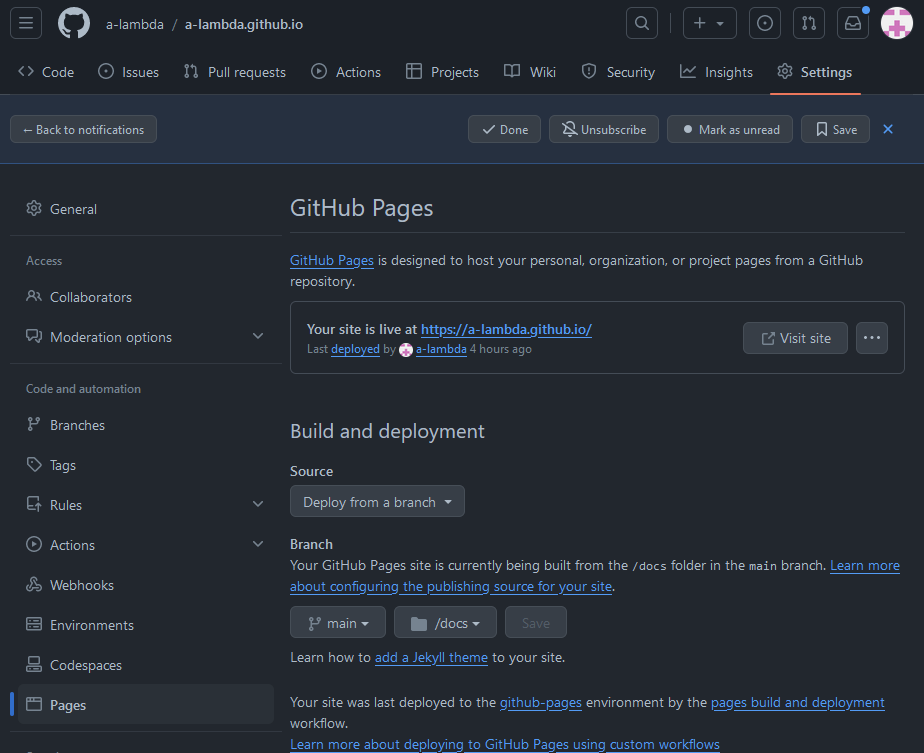

Création d’un site Web Quarto sur Github
Introduction
Ce document est basée sur cette série de vidéos Youtube en anglais produite par Joshua French
Les pages Github (https://pages.github.com/) sont une fonctionnalité offerte par Github qui permet d’héberger votre site Web personnel ainsi que vos projets.
L’hébergement s’effectue dans votre dépôt (ou repository), ce qui vous permet de :
- conserver un dépôt git pour votre site Web
- pousser (push) des changements dans votre site Web vers Github
- visualiser presque instantanément les changements de votre site dans Github
Si votre nom d’utilisateur Github est username et que votre site Web est contenu dans le dépôt demositealors le rendu de votre site Web sera disponible à l’adresse https://username.github.io/demosite/.
Si vous créer un site Web personnel, il est préférable de l’héberger à l’adresse https://username.github.io.
Création d’un site Web Quarto
- Dans R Studio,
Depuis le menu File, click -> New Project
Sélectionner New Directory -> Quarto website
Choisir un nom de répertoire
s’il s’agit du site web personnel hébergé sur Github il faudra choisir comme nom de répertoire
username.github.io,usernamereprésentant votre nom d’utilisateur Github. Le résultat sera visible à l’adressehttps://username.github.ios’il s’agit d’un site relatif à un projet hébergé sur Github, il faudra choisir comme nom de répertoire
namequi représentera le nom de votre projet. Le résultat sera visible à l’adressehttps://username.github.io/name/.
Un exemple est donné ici Figure 1

Ne pas oublier de cocher l’option Create a git repository pour la gestion des versions de votre site. Git aura été préalablement installé depuis https://git-scm.com/downloads
6 fichiers vont être automatiquement créés :
_quarto.yaml, qui permet le paramétrage global du site Web.gitignoreidentifie les fichiers et répertoire à ignorer par gitindex.qmdest le fichier associé à la page défaut du site Webabout.qmdest une page démo associée à la page principale<nom du projet>.Rprojest le fichier projet R associé au site Webstyles.cssest le nom de la feuille de styles par défaut
Création du dépôt Github
- se loguer dans Github
- Depuis la page principale, créer un dépôt Github.
Pour votre site web personnel, le dépôt devra s’appeler
username.github.io. Il faudra bien sûr remplacerusernamepar votre nom d’utilisateur Github et sélectionner l’option Public pour que le site soit visible par tous (cf. Figure 2)Pour héberger un projet, le dépôt, si vous décider de l’appeler
projet, apparaîtra à l’adressehttps://username.github.io/projet(cf. Figure 3).


Déploiement du site web sur Github
sélectionner l’onglet
settingsrelatif au projet et cliquer surPagesDans la section Build and deployment sélectionner la branche
mainet le répertoire/docsdans lequel figurent l’ensemble des fichiers constituant le site web (cf Figure 4)

La ligne “Your site live at https://a-lambda.github.io” permet de vérifier que le rendu du site s’est correctement effectué. Un clic sur le bouton Visit site permet d’apprécier le résultat.